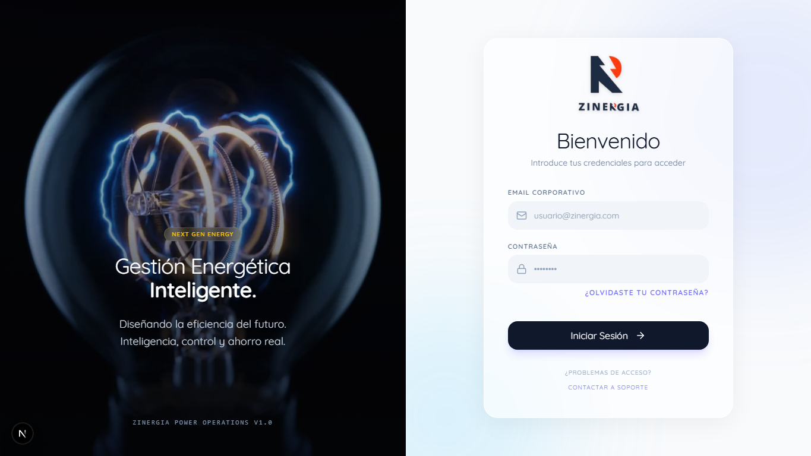

📘 Flujos operativos de la app Zinergia
Qué revisar primero
- 1 · Flujo críticoFactura → OCR → propuesta → firma → comisión.
- 2 · Riesgo de datosPII, PDF, OCR training, RGPD y logs.
- 3 · Riesgo de dineroWallet, comisiones, retiradas e idempotencia.
Convenciones visuales
Índice
- Glosario rápido
- Visión general del negocio
- Mapa de pantallas
- Arquitectura técnica
- Roles y matriz de permisos
- Máquinas de estado clave
- Recorrido recomendado
- Pantallas públicas
- / — Login
- /join/[code] — Invitación
- /p/[token] — Firma cliente
- Dashboard agente / franquicia
- /dashboard
- /dashboard/clients
- /dashboard/clients/[id]
- /dashboard/simulator
- /dashboard/comparar-multiple
- /dashboard/proposals
- /dashboard/proposals/[id]
- /dashboard/wallet
- /dashboard/invoicing
- /dashboard/network
- /dashboard/tariffs
- /dashboard/tasks
- /dashboard/academy
- /dashboard/analytics
- /dashboard/forecast
- /dashboard/settings
- Panel de administración
- APIs y procesos en segundo plano
- Datos sensibles y reglas transversales
- Checklist universal
- Pruebas E2E recomendadas
- Pendientes de validación
- Anexo A — Queries SQL
- Anexo B — Runbook
- Anexo C — Capturas
Guía por perfil
Negocio
Lee el recorrido principal, roles y pantallas clave para entender cómo se vende y cómo se cobra.
- Secciones 2, 3, 7, 9.4 y 9.8.
- Objetivo: validar que la operativa tiene sentido.
QA / Operaciones
Usa las pruebas por pantalla, checklist universal y E2E recomendados.
- Secciones 8, 9, 13 y 14.
- Objetivo: detectar bloqueos funcionales.
Dev / Seguridad
Revisa rutas, RLS, PII, Server Actions, crons, SQL y runbook.
- Secciones 10, 11, 12 y anexos A/B.
- Objetivo: cerrar fugas y errores de datos.
1 · Glosario rápido
| Término | Significado |
|---|---|
| CUPS | Código Universal del Punto de Suministro. Identifica un suministro eléctrico/gas. Dato sensible. |
| OCR job | Trabajo asíncrono que extrae datos de una factura PDF. |
| Propuesta | Documento comercial generado tras la simulación, firmable por el cliente. |
| Token público | URL /p/[token] que el cliente abre sin loguearse. |
| Comisión | Importe que gana un agente/franquicia por una propuesta firmada. |
| Retirada | Solicitud para cobrar comisiones acumuladas. |
| RLS | Row Level Security de Supabase. |
| Server Action | Función Next.js ejecutada en servidor desde un componente cliente. |
| PII | Personally Identifiable Information (nombre, email, DNI…). |
| Idempotente | Operación que ejecutada N veces produce el mismo resultado que en una. |
2 · Visión general del negocio
Zinergia es una plataforma B2B de consultoría energética. El ciclo de vida natural:
En paralelo, 👑 Admin opera tarifas, red, RGPD, auditoría, formación y reporting.
3 · Mapa de pantallas
🌐 Público
- /Login
- /join/[code]alta por invitación
- /p/[token]firma de propuesta
🏠 Dashboard
- Inicio/dashboard
- CRMclientes · ficha · tareas
- Ventasimulador · comparador · propuestas
- Dinerowallet · comisiones · facturación
- Gestiónred · tarifas · academy · ajustes
👑 Admin
- /adminpanel central
- Agentesfranquicias · asignaciones
- Reportingmétricas · negocio
- ControlRGPD · auditoría · academy
4 · Arquitectura técnica
App Router"] -->|fetch| SA["⚙️ Server
Actions"] UI -->|REST| API["🔌 Rutas API"] SA --> DB[("🗄 Supabase
Postgres + RLS")] API --> DB UI <-->|realtime| RT["📡 Supabase
Realtime"] API -->|webhook| OCR["🤖 Servicio
OCR externo"] OCR -.->|callback| API CRON["⏰ Cron jobs"] --> API P["🧾 /p/[token]"] --> API
| Capa | Tecnología | Responsabilidad |
|---|---|---|
| 🖥 UI | Next.js App Router | Pantallas y rutas API |
| 🔐 Auth + datos | Supabase | Login, BD, RLS, storage, realtime |
| 🤖 OCR | Servicio externo + webhook | Extracción de datos |
| ⚙️ Negocio | Server Actions | Mutaciones |
| ⏰ Automatización | /api/cron/* | Renovaciones, follow-ups, purgas |
| 🌐 Cliente final | /p/[token] | Firma sin login |
5 · Roles y matriz de permisos
| Capacidad | 👑 Admin | 🏢 Franquicia | 👤 Agente |
|---|---|---|---|
| Login y dashboard | ✅ /admin | ✅ /dashboard | ✅ /dashboard |
| Crear/importar clientes | — | (de su red) | ✅ |
| Subir factura · simular | — | (según config) | ✅ |
| Generar propuestas | — | (según config) | ✅ |
| Ver propuestas de terceros | ✅ global | ✅ su red | ❌ |
| Configurar tarifas globales | ✅ | ❌ | ❌ |
| Invitar agentes | ✅ | ✅ a su red | ❌ |
| Aprobar/pagar retiradas | ✅ | ✅ su red | ❌ |
| Auditoría / RGPD | ✅ | ❌ | ❌ |
| Reporting global | ✅ | parcial | ❌ |
🔴 Regla de oro. Ningún rol debe ver datos fuera de su ámbito ni siquiera escribiendo la URL a mano. Validar en UI y en RLS y en Server Actions.
6 · Máquinas de estado clave
6.1 Trabajo OCR
6.2 Propuesta
6.3 Comisión y retirada
6.4 Invitación
7 · Recorrido recomendado
7.1 👤 Camino comercial principal
- Login agente en
/. - Crear cliente en
/dashboard/clients. - Abrir su ficha
/dashboard/clients/[id]. - Lanzar simulación en
/dashboard/simulator. - Subir factura PDF y esperar OCR.
- Revisar y corregir datos.
- Ver comparativa y guardar propuesta.
- Abrir la propuesta en
/dashboard/proposals/[id]. - Generar PDF y crear enlace público.
- Abrir
/p/[token]en otro navegador y firmar. - Verificar estado actualizado y comisión en
/dashboard/wallet.
7.2 🏢 Camino de franquicia
- Login franquicia → vista agregada de su red.
/dashboard/network→ invitar agente.- Validar alta enganchada a la franquicia.
- Intentar acceder a otra franquicia → 🔒 bloqueo.
7.3 👑 Camino admin
- Login admin → redirige a
/admin. - Revisar métricas, agentes, reporting, tarifas, auditoría, RGPD.
- Aprobar una retirada pendiente.
- Confirmar que las acciones sensibles exigen rol admin.
8 · Pantallas públicas
8.1 / — Login
🎯 Objetivo. Autenticar y enviar al panel correcto según rol.
👁 Qué se ve. Email, password, botón de inicio, mensajes de error.
| Caso | Esperado |
|---|---|
| ✅ Login admin/franquicia/agente | Redirige al panel correcto |
| ❌ Password incorrecto | Mensaje genérico, sin filtrar internals |
🔒 Sin sesión, abrir /dashboard o /admin | Redirección a / |
| 🔒 Email inexistente vs password incorrecto | Mismo mensaje (evita enumeración) |
⚠️ Riesgos. Enumeración de cuentas; loop de redirección si el perfil no tiene rol.
8.2 /join/[code] — Registro por invitación
🎯 Objetivo. Que un invitado cree cuenta vinculada a su franquicia/agente padre.
con code] --> B{Validar code} B -->|✓| C[Form registro] B -->|✗ caducado/usado| X[Error claro] C --> D[Crear cuenta] D --> E[Asociar a invitador] E --> F[Marcar code usado]
| Caso | Esperado |
|---|---|
| ✅ Code válido | Registro + asociación correcta |
| ❌ Inválido / caducado / usado | Mensaje claro |
| 🔒 Reusar code tras alta | Rechazado |
8.3 /p/[token] — Propuesta pública para cliente final
🎯 Objetivo. Que el cliente final vea y firme una propuesta sin loguearse.
| Caso | Esperado |
|---|---|
| ✅ Token válido + firma | Estado pasa a Firmada |
| ❌ Token inválido / caducado | Error sin filtrar internals |
| 🔒 Doble firma | La segunda no sobrescribe silenciosa |
| 🔒 Firma vacía o gigante | Rechazo claro |
| 🔒 Enumerar otros tokens | Imposible (token opaco, rate-limit) |
⚠️ Riesgos. Payloads gigantes (DoS); token reutilizado fuera de TTL.
9 · Dashboard agente / franquicia
Layout común con barra superior. Sesión obligatoria, menú según rol, URLs no autorizadas → bloqueadas.
9.1 /dashboard — Inicio operativo
| Rol | Vista |
|---|---|
| 👑 Admin | Redirección automática a /admin |
| 🏢 Franquicia | KPIs agregados de su red, conversión, comisiones pendientes |
| 👤 Agente | KPIs propios, alertas, OCR jobs, pipeline, acciones |
9.2 /dashboard/clients — Clientes
👁 Qué se ve. Listado, buscador, filtros por estado, vista lista/pipeline, KPIs, importación CSV, acciones masivas.
💾 Datos sensibles. Nombre, email, teléfono, dirección, CUPS, DNI/CIF. 🔒 Cifrado/hash según reglas del proyecto.
| Caso | Esperado |
|---|---|
| ✅ Crear con mínimos / completos | Aparece en listado |
| ✅ CSV válido / con errores | Crea válidos + reporta erróneos |
| 🔒 Agente A vs cliente de B | Bloqueo |
| 🔒 Errores técnicos | Sin CUPS/DNI expuestos |
9.3 /dashboard/clients/[id] — Ficha de cliente
🎯 Vista 360°. Cabecera, contacto, estado, propuestas, facturas, timeline, tareas, documentos, contratos.
| Acción | Resultado |
|---|---|
| ✏️ Editar | Guardar → refresco |
| 🚀 Simular | Precarga cliente → /dashboard/simulator |
| 🗑 Eliminar | Confirmación; sin huérfanos incoherentes |
9.4 /dashboard/simulator — Simulador OCR
🎯 El corazón de la app. Convierte una factura en datos, propone tarifas mejores y guarda la propuesta.
Etapa 2 · OCR
Etapa 3 · Revisión
Campos: titular · CUPS · dirección · potencia · consumo · tarifa · periodos · importe · contrato. PDF original lado a lado, alertas en sospechosos.
Pruebas
| Caso | Esperado |
|---|---|
| ✅ PDF correcto | OCR completa |
| ❌ Archivo inválido | Error claro |
| ❌ Callback nunca llega | Estado de error legible |
| 🔒 Ejemplos de entrenamiento | Sanitizados sin PII |
| 🔒 Doble clic en "Guardar" | No duplica |
| 🔒 Logs | Sin PII |
9.5 /dashboard/comparar-multiple — Comparador múltiple
Comparar hasta 3 facturas. Estados por factura: Pendiente → Analizando → Analizada → Comparando → Completada | Error.
- ✅ 1 y 3 facturas; superar el límite → rechazo.
- ✅ Error en una factura no rompe las demás.
- 🔒 Cada resultado corresponde a su archivo.
9.6 /dashboard/proposals — Listado de propuestas
- 🔒 Agente solo propias · 🏢 solo de su red · 👑 las necesarias.
- ✅ Filtros + paginación + estado vacío conviven sin romperse.
9.7 /dashboard/proposals/[id] — Detalle
Revisar datos · ahorro · descargar/generar PDF · compartir enlace público · consultar firma.
Ruta API: /api/proposal/[id]/pdf
🔒 Validar ownership en la ruta, no solo RLS.
| Caso | Esperado |
|---|---|
| ✅ Descarga propia | OK |
| 🔒 Forzar URL con UUID ajeno | Bloqueo |
| 🔒 PDF cruzado | Imposible |
9.8 /dashboard/wallet — Cartera, comisiones y retiradas
🔒 Reglas. 👤 solo sus retiradas · 🏢 solo de su red · 👑 global. RPC idempotente.
| Caso | Esperado |
|---|---|
| ✅ Solicitar como agente | Aparece en pendientes |
| 🔒 Retiradas ajenas | Invisibles |
| ✅ Aprobar/rechazar | Estado cambia |
| 🔒 Marcar pagada sin aprobar | Bloqueado si exige |
| 🔒 Doble click solicitar | Una sola retirada |
9.9 /dashboard/invoicing · 9.10 /dashboard/network · 9.11 /dashboard/tariffs
- Invoicing. Listar · emitir · cancelar · marcar pagada · generar desde comisiones. 🔒 Permisos por rol.
- Network. Árbol jerárquico, invitaciones. 🔒 🏢 no invita fuera de su ámbito; árbol no mezcla franquicias.
- Tariffs. Eléctricas/gas, comisiones, importar Excel. 🔒 👤 no modifica; 👑 sí; cambios afectan nuevas simulaciones.
9.12-9.16 Tasks · Academy · Analytics · Forecast · Settings
- Tasks. CRM ligero. 🔒 No aparecen tareas ajenas.
- Academy. Formación. ✅ Estado vacío legible; ❌ enlaces rotos.
- Analytics. Funnel, mensuales, tendencias. ✅ Coherencia con /dashboard.
- Forecast. Previsión. ✅ Cálculos no rompen sin históricos.
- Settings. Perfil/comercial/comisiones/red. 🔒 Permisos por rol.
10 · Panel de administración
📍 /admin/* · 👥 👑 · 🔴 Cualquier otro rol → bloqueo o redirección.
| Ruta | Objetivo | Verificar |
|---|---|---|
/admin | Resumen global, franquicias, KPIs | Solo 👑; estados vacíos OK |
/admin/agents | Gestión y asignaciones | Cambios; sin PII innecesaria |
/admin/reporting | Informes, gráficos, rankings, export | Filtros de fecha; coherencia |
/admin/academy | Contenido formativo | Crear/editar/publicar |
/admin/audit | Eventos sensibles | No PII completa; filtros |
/admin/business-metrics | Métricas avanzadas | Consistencia con reporting |
/admin/rgpd | Exportar/borrar PII | Flujo dedicado ↓ |
10.1 Flujo RGPD
auditoría sin PII] D --> E{Verificar no recuperable} E -->|✓| F([Cerrado]) E -->|✗| G[Investigar relacionados] style F fill:#dcfce7 style G fill:#fee2e2
11 · APIs y procesos en segundo plano
| Ruta | Riesgo | Reglas |
|---|---|---|
/api/webhooks/ocr/callback | 🔴 | Validar firma · sanitizar ejemplos · sin PII en logs · resiliencia ante payloads incompletos |
/api/ocr/examples | 🟡 | Rol permitido · datos sanitizados |
/api/proposal/[id]/pdf | 🔴 | Auth + ownership; no depender solo de RLS |
/api/push/subscribe | 🟡 | Asociar suscripción al usuario correcto |
/api/cron/* | 🔴 | Secreto cron · idempotente · alcance limitado · sin PII |
Crons. detect-renewals · generate-actions · proposal-followup · purge-expired-clients · weekly-summary.
12 · Datos sensibles y reglas transversales
| # | Regla |
|---|---|
| 1 | Todo acceso a BD pasa por RLS |
| 2 | Server Actions mutantes validan rol antes de escribir |
| 3 | CUPS y DNI/CIF cifrados; consultas por hash |
| 4 | Logs sin PII, ni en errores ni métricas |
| 5 | database.types.ts regenerado tras cada migración |
| 6 | Toda modificación de esquema vive en supabase/migrations/ |
12.1 Cambios recientes integrados en el flujo
Seguridad y datos
| Cambio | Operativa esperada | Qué probar |
|---|---|---|
| PDF de propuestas | /api/proposal/[id]/pdf comprueba propietario, franquicia o admin antes de generar el PDF. | Un agente no descarga PDFs de otro agente aunque conozca el UUID. |
| Retiradas | Franquicia solo gestiona solicitudes de usuarios de su propia red. | Franquicia A no ve retiradas de franquicia B. |
| OCR training | Los ejemplos para entrenar OCR se guardan sin CUPS, DNI/CIF, nombres ni direcciones completas en claro. | La query A.4 no devuelve CUPS visibles. |
| Cache SIPS | El consumo anual cacheado no puede mutarlo cualquier usuario autenticado desde cliente. | Insert/update desde cliente normal debe fallar. |
| Migraciones | Historial local y remoto de Supabase alineado. | npx supabase migration list --linked muestra versiones coincidentes. |
Comparativa de factura
- Potencia: kW contratados × precio nuevo × días facturados.
- Energía: usar periodos P1/P2/P3/P4/P5/P6 si vienen desglosados; usar total solo si la nueva tarifa tiene precio único.
- Bono social, alquiler, excesos de distribuidora y equivalentes se copian cuando apliquen.
- Servicios comerciales no obligatorios se excluyen de la comparativa limpia.
- Impuesto eléctrico e IVA se recalculan sobre la base simulada.
- Ahorro = factura actual vs. factura optimizada; anualizado según días facturados.
SIPS y consumo anual
- Primero se intenta SIPS/CNMC con CUPS.
- Si falla, se usa el consumo anual indicado en factura como respaldo.
- Si falta el dato, la comisión queda estimada o pendiente.
- El tramo de comisión se decide en MWh anuales.
Tarifas y comisiones
| Comercializadora | Incluido | Reglas especiales |
|---|---|---|
| Plenitude | 3.0TD y 6.1TD fijas: FACIL, PERIODOS y FIJO; productos POWER +, POWER, ENERGY +, ENERGY, BASSIC, PRIME, CUSTOM. | Energía con precio final 15% dto.; PRIME usa precio sin descuento. Se omiten INDEX. |
| LOGOS | FIJO PYME electricidad: SIGMA, OMEGA, EPSILON, DELTA, GAMMA y BETA. | Se omiten hogar, gas, indexado y ALFA/ZEUS. |
| Comisiones | Plenitude y LOGOS por tramos de consumo anual en MWh. | LOGOS 6.1TD tramo 1.200-2.500 EPSILON: 12.276,50 €. |
Confirmación supervisada
Antes de enviar o compartir propuesta, el colaborador confirma ahorro, comisión, fuente SIPS/factura/manual, alertas de calidad y equilibrio comercial.
Regla: primero ahorro real para el cliente; entre opciones con ahorro similar, se puede priorizar mejor comisión si la propuesta sigue siendo defendible.
Propuesta, PDF y tarifas
La propuesta debe mostrar logo, factura actual vs. optimizada, desglose de potencia/energía/cargos/impuestos/IVA, ahorro en factura, ahorro anual y porcentaje.
/dashboard/tariffs muestra logos por compañía, columnas compactas de energía/potencia y etiqueta de comisión cargada.
Operativa local y Supabase
El proyecto queda con MCP local de Supabase en .mcp.json para gmjgkzaxmkaggsyczwcm. El log local .next-localhost.log queda ignorado.
npx supabase migration list --linked
npx supabase db push --dry-run
npx supabase db push
npx supabase gen types typescript --project-id gmjgkzaxmkaggsyczwcm > src/types/database.types.ts
npm run lint
npx tsc --noEmit
npm run test
npm run build13 · Checklist universal por pantalla
🟦 Funcional
- ☐ Carga con datos
- ☐ Estado vacío legible
- ☐ Acciones funcionan
- ☐ Cambios persisten
- ☐ Navegación lógica
🟥 Seguridad
- ☐ Rol correcto entra
- ☐ Rol incorrecto NO
- ☐ Sin datos cruzados
- ☐ Sin doble envío
- ☐ Errores sin PII
🟨 UX
- ☐ Errores claros
- ☐ Móvil OK
- ☐ Vacíos no parecen rotos
- ☐ Foco/teclado
- ☐ Texto contraste
13.1 · Checklist imprimible de una página
Revisión operativa rápida
Usar durante una sesión de QA o una demo interna. Marcar OK solo cuando el flujo se haya probado con datos reales o de staging.
14 · Pruebas E2E recomendadas
🥇 E2E 1 · Propuesta completa
Login agente → cliente → factura → OCR → guardar → PDF → compartir → firmar → verificar.
🥈 E2E 2 · Red franquicia
Login 🏢 → invitación → registro → ver red → confirmar bloqueo de otra franquicia.
🥉 E2E 3 · Retirada
Comisión disponible → solicitar → 🏢/👑 aprobar → marcar pagada → histórico.
🛡 E2E 4 · RGPD
Login 👑 → buscar → exportar → borrar → confirmar no recuperación → audit log.
🚨 E2E 5 · Accesos cruzados
Crear A y B → A genera datos → entrar como B → forzar URLs → debe bloquear clientes, propuestas, PDFs, comisiones, retiradas.
15 · Pendientes de validación
- ⏳ Ejecutar E2E con credenciales de staging.
- ⏳ Confirmar responsive móvil (clientes, simulador, red, wallet, admin).
- ⏳ Idempotencia real de los cron en producción.
- ⏳ Formato comercial final de PDFs.
- ⏳ Cerrar con negocio estados exactos de propuesta, comisión y retirada.
- ⏳ Decidir cifrado de nombre completo y dirección.
Anexo A · Queries SQL de verificación
Solo lectura. Sustituye:agent_id,:franchise_id, etc. Confirma antes que el esquema remoto coincide consrc/types/database.types.ts.
A.1 Salud general
SELECT 'profiles' AS tabla, count(*) FROM profiles
UNION ALL SELECT 'clients', count(*) FROM clients
UNION ALL SELECT 'proposals', count(*) FROM proposals
UNION ALL SELECT 'ocr_jobs', count(*) FROM ocr_jobs
UNION ALL SELECT 'network_commissions', count(*) FROM network_commissions
UNION ALL SELECT 'withdrawal_requests', count(*) FROM withdrawal_requests
UNION ALL SELECT 'invitations', count(*) FROM invitations
ORDER BY tabla;A.2 Roles y onboarding
SELECT role, count(*) FROM profiles GROUP BY role;
SELECT id, email FROM profiles WHERE role IS NULL;
SELECT id, email FROM profiles WHERE role='agent' AND franchise_id IS NULL;A.3 Aislamiento por agente / franquicia
SELECT count(*) FROM clients WHERE owner_id = :agent_id;
-- 🔒 Fuga: clientes visibles para B que pertenecen a A
SELECT c.id FROM clients c
WHERE c.owner_id = :agent_a_id
AND c.id IN (SELECT id FROM clients WHERE owner_id = :agent_b_id);
-- Propuestas de una franquicia
SELECT id, status, created_at
FROM proposals
WHERE franchise_id = :franchise_id
ORDER BY created_at DESC;A.4 Pipeline OCR
-- Por estado, últimas 24h
SELECT status, count(*) FROM ocr_jobs
WHERE created_at > now() - interval '24 hours'
GROUP BY status;
-- 🟥 Jobs zombi
SELECT id, created_at, updated_at FROM ocr_jobs
WHERE status='analyzing' AND updated_at < now() - interval '10 minutes';
-- 🔒 PII en ejemplos
SELECT id, created_at FROM ocr_training_examples
WHERE raw_fields::text ~* '(ES[0-9A-Z]{16,20})'
OR extracted_fields::text ~* '(ES[0-9A-Z]{16,20})'
OR corrected_fields::text ~* '(ES[0-9A-Z]{16,20})'
OR raw_text_sample ~* '(ES[0-9A-Z]{16,20})';A.5 Comisiones y retiradas
SELECT agent_id, sum(agent_commission) AS disponible
FROM network_commissions
WHERE status='available'
GROUP BY agent_id
ORDER BY disponible DESC;
SELECT w.id, w.amount, w.created_at, p.email
FROM withdrawal_requests w
JOIN profiles p ON p.id = w.user_id
WHERE w.status='requested'
ORDER BY w.created_at;
-- 🔒 Duplicados
SELECT user_id, amount, count(*)
FROM withdrawal_requests
WHERE created_at > now() - interval '5 minutes'
GROUP BY user_id, amount HAVING count(*)>1;A.6 Propuestas y firma
SELECT status, count(*) FROM proposals
WHERE created_at > now() - interval '7 days' GROUP BY status;
-- PENDIENTE: confirmar en remoto si estas columnas public_* ya están aplicadas.
SELECT id, public_token, public_expires_at FROM proposals
WHERE public_token IS NOT NULL
AND (public_expires_at IS NULL OR public_expires_at > now());
SELECT id, public_accepted_at, signed_at, signed_name
FROM proposals
WHERE public_accepted_at IS NOT NULL
ORDER BY public_accepted_at DESC;A.7 Auditoría y RGPD
SELECT action, count(*) FROM audit_logs
WHERE created_at > now() - interval '1 day'
GROUP BY action;
-- 🔒 PII en audit log
SELECT id, action, created_at FROM audit_logs
WHERE old_data::text ~* '@'
OR new_data::text ~* '@'
OR old_data::text ~* '\m[0-9]{8}[A-Z]\M'
OR new_data::text ~* '\m[0-9]{8}[A-Z]\M';Anexo B · Runbook
B.1 🔴 OCR no completa
Síntoma. Simulador en "Analizando" indefinidamente.
Diagnóstico. Jobs en analyzing > 10 min · logs del callback · disponibilidad del OCR externo.
| Caso | Acción |
|---|---|
| OCR caído | Avisar usuarios; reintentar |
| Firma inválida | Rotar/sincronizar secret |
| Job bloqueado | UPDATE ocr_jobs SET status='error' WHERE id=… |
B.2 🔴 Cliente firma y no se actualiza el estado
Diagnóstico. Revisar la fila de proposals: estado, public_accepted_at, signed_at, signed_name y signature_data si esas columnas existen en el entorno. Revisar logs y canal Realtime.
Mitigación. Si la firma existe pero el estado no cambió: transición manual + audit log. Si no existe: revisar tamaño/formato.
B.3 🔴 Doble retirada
Diagnóstico. Query A.5 de duplicados. Verificar idempotencia de la RPC (debe usar request_id).
Mitigación. Cancelar el duplicado más reciente; abrir incidencia técnica.
B.4 🔴 Acceso cruzado entre agentes
🚨 STOP. No empujar más cambios hasta cerrar la fuga.
- Ejecutar query 🔒 de A.3.
- Auditar logs por
client_idafectado. - Notificar a Seguridad/RGPD si hubo lectura efectiva.
- Endurecer RLS y añadir test de regresión.
B.5 🟡 PDF cruzado o vacío
Verificar ownership en la ruta API; añadir Cache-Control: private, no-store; invalidar caché.
B.6 🟡 Cron ejecutado dos veces
Añadir advisory lock o columna idempotency_key; limpiar duplicados con cuidado.
B.7 🟡 Login en bucle
Query A.2 de perfiles huérfanos. Asignar rol manualmente y revisar el alta.
B.8 🟢 Estados vacíos parecen errores
Cada listado debe tener estado vacío explícito con icono + texto + CTA.
Anexo C · Capturas de pantalla
Capturas reales disponibles en este repositorio. Las pantallas privadas requieren sesión de prueba por rol; por eso quedan marcadas como pendientes hasta ejecutar E2E con credenciales de staging.

dashboard, clientes, simulador, propuestas, wallet y admin
| Pantalla | Fichero | Estado |
|---|---|---|
| Login / | flujos-operativos-login.png | ✅ real |
| Dashboard agente | docs/screens/dashboard-agent.png | ☐ |
| Dashboard franquicia | docs/screens/dashboard-franchise.png | ☐ |
| Listado clientes | docs/screens/clients-list.png | ☐ |
| Ficha cliente | docs/screens/client-detail.png | ☐ |
| Simulador subida | docs/screens/sim-1-upload.png | ☐ |
| Simulador OCR | docs/screens/sim-2-ocr.png | ☐ |
| Simulador revisión | docs/screens/sim-3-review.png | ☐ |
| Simulador comparativa | docs/screens/sim-4-compare.png | ☐ |
| Detalle propuesta | docs/screens/proposal-detail.png | ☐ |
| Firma cliente | docs/screens/p-token-sign.png | ☐ |
| Wallet agente | docs/screens/wallet-agent.png | ☐ |
| Wallet aprobación | docs/screens/wallet-approve.png | ☐ |
| Red comercial | docs/screens/network-tree.png | ☐ |
| Admin panel | docs/screens/admin-home.png | ☐ |
| Admin RGPD | docs/screens/admin-rgpd.png | ☐ |
Resoluciones recomendadas: ≈1280×800 desktop, 390×844 móvil.